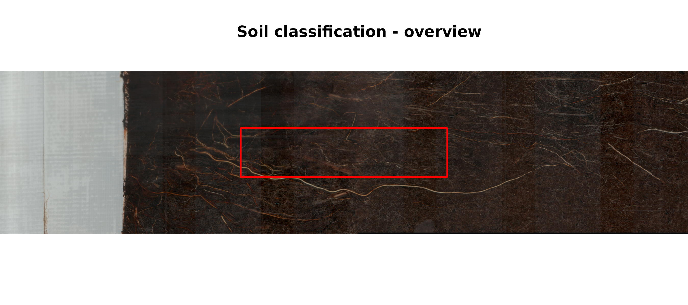
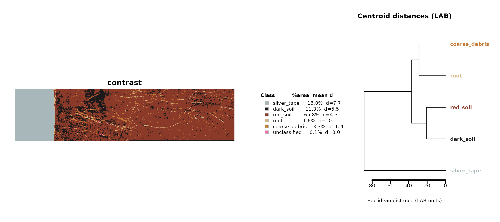
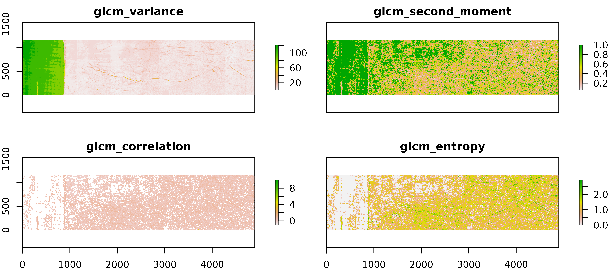
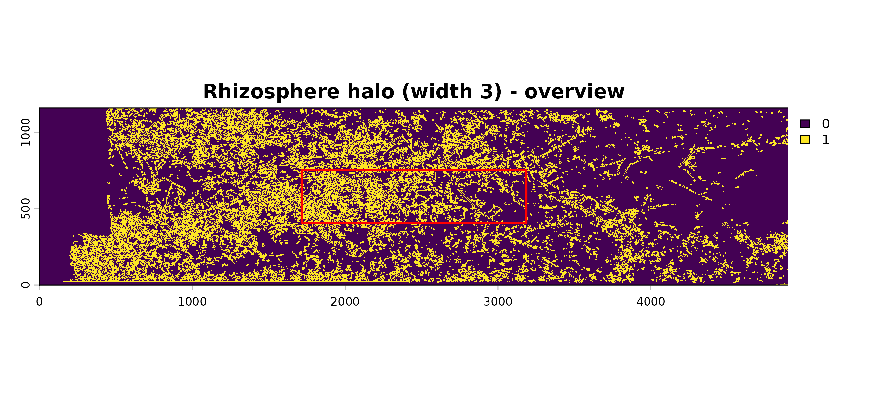
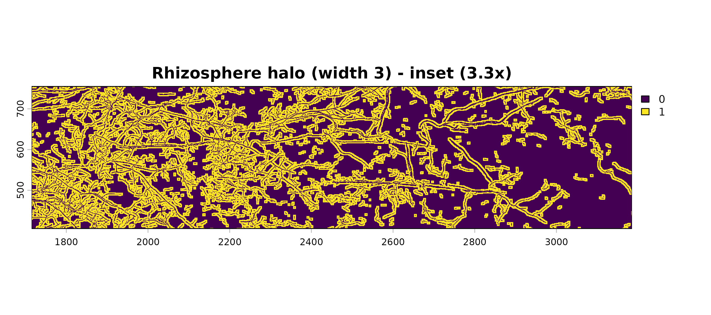
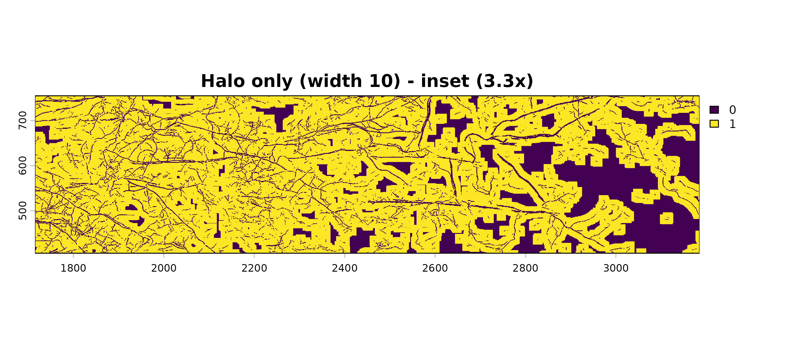

Special Topics: Soil Color, Soil Texture, Rhizosphere Halos, and Turnover
Source:vignettes/SpecialTopics_vignette.Rmd
SpecialTopics_vignette.RmdThis article collects a few less-obvious capabilities of Rootopia that do not fit the main step-by-step tutorials but are useful for specific questions: classifying soil/soil material by color, quantifying soil surface texture, building a rhizosphere “halo” zone around roots, and measuring root turnover between time points.
All examples use the bundled Oulanka 2023 example rasters, so you can run them as-is.
1. Soil and material color classification
classify_soil_rgb() assigns every pixel of an RGB scan
to a class (e.g., dark soil, red soil, root, silver tape, coarse debris,
…) by nearest-centroid matching in CIE LAB color space. Pixels too far
from any centroid are left “unclassified”.
img <- terra::rast(rgb_Oulanka2023_Session03_T067)
# downsample_fact speeds up the demo; drop it for full resolution
result <- classify_soil_rgb(img, downsample_fact = 4, verbose = FALSE)
# A SpatRaster of class IDs (factor levels are the class names)
terra::plot(result$map)
The returned list also carries per-class statistics – pixel counts, area fractions, mean LAB/RGB colors, and the mean distance to the centroid:
result$metrics
#> class n_pixels pct_pixels L_mean A_mean B_mean L_sd A_sd B_sd R_mean
#> 1 dark_soil 40252 11.331 8.8 1.5 2.4 3.38 1.45 1.35 28.3
#> 2 red_soil 233641 65.768 13.9 4.4 5.9 3.55 1.99 2.10 44.2
#> 3 root 5707 1.606 34.5 4.6 10.7 8.19 3.26 5.74 94.7
#> 4 silver_tape 63821 17.965 73.1 -2.0 0.9 3.63 0.55 1.06 176.4
#> 5 coarse_debris 11632 3.274 22.5 7.9 11.9 3.57 2.96 3.39 70.4
#> 6 unclassified 197 0.055 20.1 18.6 22.7 7.00 2.11 4.84 80.2
#> G_mean B_mean_rgb mean_dist_to_centroid hex_actual
#> 1 23.9 20.9 5.51 #1C1816
#> 2 33.0 27.1 4.32 #2C211B
#> 3 78.4 64.6 10.11 #5F4E40
#> 4 180.6 177.8 7.67 #B0B5B2
#> 5 49.1 36.5 6.38 #473124
#> 6 36.5 13.9 NA #50240FVisualizing the classification
plot_soil_classification() renders the class map with a
legend and the actual mean colors of each class:
plot_soil_classification(result)
Calibrating your own centroids
The default centroids were calibrated on one scanner and site. For
other data, build your own with build_soil_centroids(). You
supply picks: a named list with one element per material
class, where each element is a matrix with 3 columns (R, G, B in 0-255).
Each row is one color sample for that class — different classes can have
different numbers of rows. The function averages each class’s samples
into a single LAB centroid and returns a table in the same format as the
built-in defaults, ready to pass back into
classify_soil_rgb().
The simplest approach is to read representative RGB values off your scan with a color picker (e.g. in an image viewer or QGIS) and enter them directly:
# each row is one pixel with r,g,b values
picks <- list(
region1 = matrix(c( 28, 22, 18,
32, 26, 21,
25, 19, 15), ncol = 3, byrow = TRUE),
region2 = matrix(c( 80, 45, 35,
65, 32, 31), ncol = 3, byrow = TRUE),
region3 = matrix(c(180, 160, 130,
175, 155, 125,
185, 165, 135,
178, 158, 128), ncol = 3, byrow = TRUE),
region4 = matrix(c(201, 205, 210,
198, 200, 205), ncol = 3, byrow = TRUE)
)
# One MAX_DIST (LAB units, ~10-30) per class -- larger admits more pixels
max_dist <- c(region1 = 14, region2 = 14, region3 = 26,
region4 = 12)
cents <- build_soil_centroids(picks, max_dist) # prints diagnostics
result <- classify_soil_rgb(img, centroids = cents)
terra::plot(result$map)Note: provide a class for every material in your
scans. Because classification is nearest-centroid, any material without
its own class is snapped into whichever defined class sits closest.
build_soil_centroids() prints intra-class spread and
inter-class distances to help you tune MAX_DIST before
running the full classification.
See ?classify_soil_rgb for the full description of the
centroid table format and the prior/alpha
blending workflow for iterative refinement.
2. Soil surface texture and color
analyze_soil_texture() computes gray-level co-occurrence
matrix (GLCM) texture metrics from a color image, which can be
informative on the spatial heterogeneity within a scan.
tex <- analyze_soil_texture(
img,
grays = 12,
window = c(5, 5),
metrics = c("variance", "second_moment","correlation","entropy")
)
terra::plot(tex)
A simple summary of overall tube color (mean RGB and a single
luminance value) is available via tube_coloration():
tube_coloration(img)
#> Some pixels have zero intensity, which may affect color calculations
#> rcc gcc bcc hue saturation luminosity red green
#> 1 0.4117 0.3192 0.269 0.06635659 0.1982295 0.2660763 67.84946 59.75458
#> blue
#> 1 54.39973. Rhizosphere halo (root buffer zone)
create_root_buffer() grows a buffer of a chosen width
around every root pixel – a simple proxy for the rhizosphere / diffusion
zone. With halo_only = TRUE it returns only the ring around
the roots (excluding the roots themselves).
seg <- load_flexible_image(seg_Oulanka2023_Session03_T067, select_layer = 2)
halo <- create_root_buffer(seg, width = 3, halo_only = TRUE, kernel = "circle")
terra::plot(halo)
halo10 <- create_root_buffer(seg, width = 10, halo_only = TRUE, kernel = "circle")
terra::plot(halo10)
halo10 <- create_root_buffer(seg, width = 10, halo_only = FALSE, kernel = "circle")
terra::plot(halo10)
The kernel argument switches between a
"circle" (8-neighbor) and a "diamond"
(4-neighbor) growth shape, and width controls how many
dilation iterations are applied. Set halo_only = FALSE to
return the roots plus their buffer as a single filled mask.
4. Root turnover between time points
root_turnover() quantifies how much root material was
produced, lost, or retained. method selects one of two
approaches:
-
"tc"(Temporal Comparison) – compare two segmented images from different sessions. Thetc_methodargument picks how root amount is measured:"kimura"(root length) or"rootpx"(root pixel count). -
"dpc"(Decay, Production, Constant) – decompose a single multi-layer image produced by RootDetector into decayed, newly produced, and unchanged root fractions.
The bundled TurnoverDPC_data is a DPC-style image:
dpc <- terra::rast(TurnoverDPC_data)
root_turnover(dpc, method = "dpc")
#> tape constant production decay newgrowth.ratio decay.ratio constant.ratio
#> 1 887012 438681 2770138 3355722 0.8633 0.8844 0.0668For the two-timepoint comparison you would instead pass both sessions:
s1 <- terra::rast(skl_Oulanka2023_Session01_T067)
s3 <- terra::rast(skl_Oulanka2023_Session03_T067)
root_turnover(s1, s3, method = "tc", tc_method = "rootpx", unit = "cm", dpi = 150, select_layer = 2)